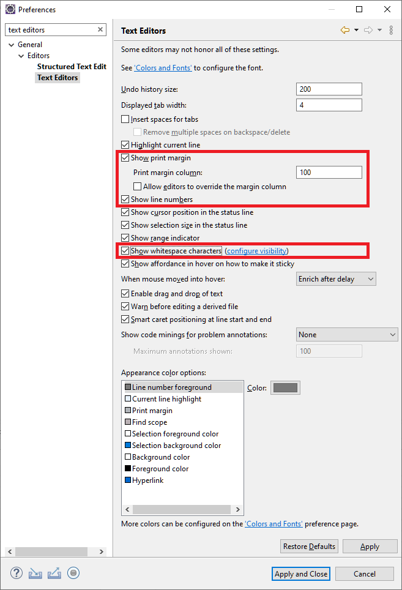
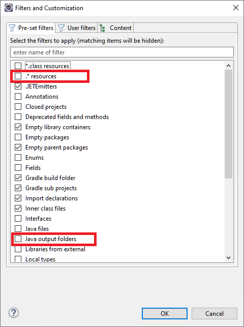
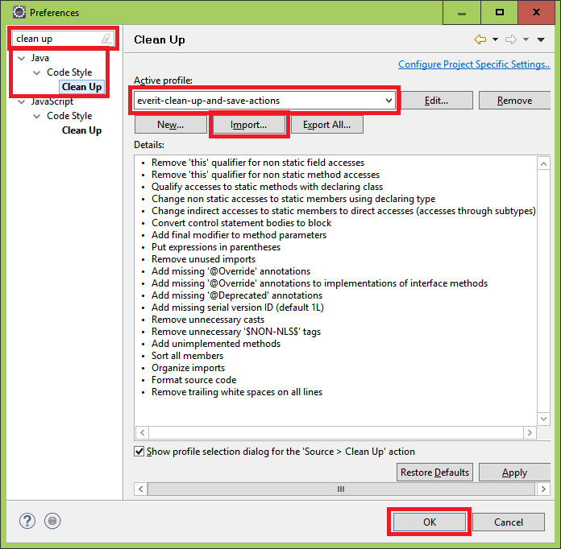
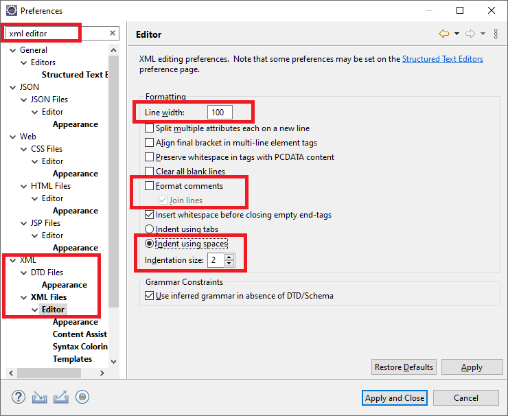

Development tools (installation and usage)
Development tools (installation and usage)
The aim of this tutorial is to describe how to get started with the development tools we use at Everit. Please follow each step carefully! Do not worry if you do not know any of the technologies, they will be introduced in later chapters. When reading this section, please focus on the IDE, its settings and its usage only.
Download Oracle Java SDK 7. In case you prefer id, you can download OpenJDK as well. Note that as soon as a stable version of Java 8 is available, we will migrate all our components to it. The reason is that Java 8 will introduce Lambda expressions that will allow us to replace all our anonymous classes in our codes.
On Linux, the newest OpenJDK package has to be downloaded and installed from the repository of the given Linux distribution.
Download the latest Java SDK from http://www.oracle.com. In case your system is 64bit compatible, it is recommended to download the x64 version.
Install Java by running the exe file you downloaded. Normally, you have to press "next", "next" and "finish". The default installation path of java is "c:/Program Files/java".
Add the environment variable "JAVA_HOME" with the value of the location of your Java instance. Do not put slash after the last character of the file path!
Extend the PATH environment variable with "%JAVA_HOME%\bin;". You should put this before all the other values of PATH. The reason is that a java.exe is created in the directory c:\Windows\System32 after installation. In case a JRE is installed with a newer version, this java.exe will be replaced. If the c:\Windows\System32 folder is before the %JAVA_HOME%\bin value in the PATH environment variable, it may happen that the first java.exe in the PATH is different from the one located in JAVA_HOME. This would cause a lot of inconveniences.
Maven is the build tool Everit projects are compiled with. It can be installed as described below:
Download the latest stable build of Maven from http://maven.apache.org
Unzip maven into a directory of your choice
In windows:
Add M2_HOME to the environment variables where the value is the path of the folder of your Maven installation, without a slash after the last character of the file path. Do not worry if you use Maven3, the name of the environment variable is still M2_HOME.
Append the value of the PATH environment variable with "%M2_HOME%\bin"
In Linux:
Create a symbolic link that points to the mvn script file at /usr/local/bin
Download the latest stable version of Eclipse. You will need the "Eclipse IDE for Java EE developers" version. It is a platform dependent ZIP file that you can uncompress into any folder. You can start Eclipse with the binary file located in the root directory of Eclipse (eclipse.exe in Windows or eclipse in Linux).
The above version of Eclipse should already contain the Git and the M2E Eclipse plugins, which are necessary to continue this tutorial.
To set up the following preferences is strongly recommended, but it is not required only if one wishes to contribute to the codes written by Everit.
Click the Window/Preferences menu item in the Eclipse menu bar.
Type "Text Editors" in the "type filter text" field and click "Text Editors".
Tick "Show print margin" in the "Text Editors" menu and set the value of "Print margin column" to 120.
Tick "Show line numbers".
Click "Apply" and then "OK".
You may use the "ctrl+shift+f" keyboard shortcut to format codes automatically.
By default, Project Explorer does not show generated folders and resources starting with a dot. As it is often necessary to check the content of these files (especially the content of the generated MANIFEST.MF file), the settings of the Project Explorer should be modified.
Select the Customize view... menu item from the drop down menu of Project Explorer
Remove the tick from .*resources and Java output folders
Push the OK button
To set up the following preferences is strongly recommended, but it is not required only if one wishes to contribute to the codes written by Everit.
Use "Save link as.." to download the following file containing the required formatter settings:
everit-eclipseformatter.xmlClick the Window/Preferences menu item in the Eclipse menu bar.
Type "formatter" in the "type filter text" field and select "Java/Code Style/Formatter" menu item.
Click the "Import" button and select the previously downloaded file.
Click "OK" to make the above file the default formatter.

To set up the following preferences is strongly recommended, but it is not required only if one wishes to contribute to the codes written by Everit.
Use "Save link as.." to download the following file containing the required clean up and save actions settings:
everit-clean-up-and-save-actions.xmlClick the Window/Preferences menu item in the Eclipse menu bar.
Type "clean up" in the "type filter text" field and select the "Java/Code Style/Clean Up" menu item.
Click the "Import" button and select the previously downloaded file.
Click "OK" to make the above file the default code cleaner.
To clean up a code, click "Source/Clean Up..." when in a java file.
To set up the following preferences is strongly recommended, but it is not required only if one wishes to contribute to the codes written by Everit.
Click the Window/Preferences menu item in the Eclipse menu bar.
Type "XML Editor" in the "type filter text" field and click "Editor".
Set "Line width" to 120.
Tick "Indent using spaces" and set its value to 2.
Click "Apply" and then "OK".
To set up the following preferences is strongly recommended, but it is not required only if one wishes to contribute to the codes written by Everit.
Click the Help/Eclipse Marketplace... menu item in the Eclipse menu bar and select the "Search" menu.
Type "Checkstyle" in the "Find:" field and click "Install" as shown below.

Select all components, click "Confirm", accept the license agreement and finish installation.

Restart Eclipse to complete installation.
Click the Window/Preferences menu item in the Eclipse menu bar.
Select "Checkstyle" in the left hand list and click "New..." in the Checkstyle menu and configure it in the following manner:

Click the "Set as Default" button after selecting "everit" in the "Global Check Configurations" list and click OK.

Right click on a project and select "Checkstyle/Activate Checkstyle" in the drop down menu to activate Checkstyle on a project.
To keep the target/classes directory up-to-date and having properly configured projects after a project import, it a couple of m2e connectors have to be installed.
Select Window/Preferences in your Eclipse IDE
In the preferences window, go to Maven/Discovery and click on the "Open Catalog" button

In the popup window, select the buildhelper and the Tycho Configurator connectors and install them